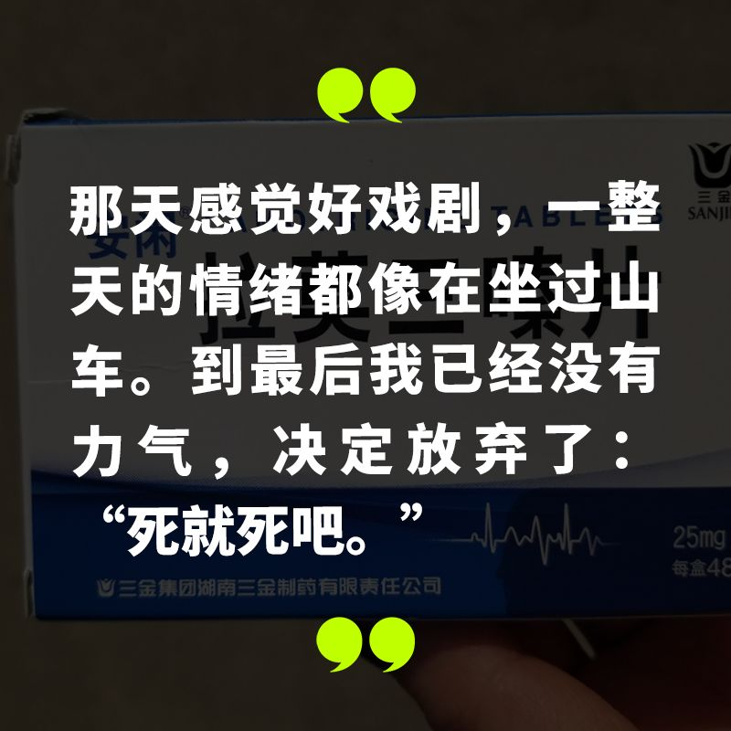
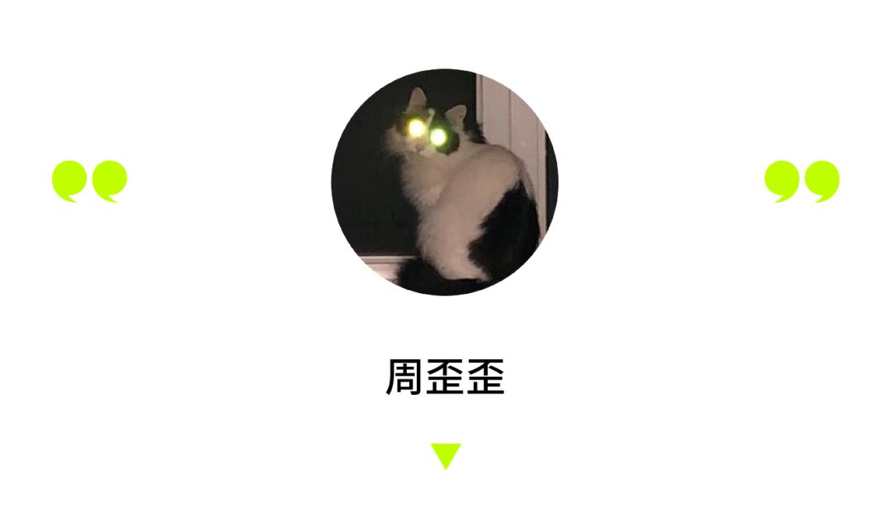
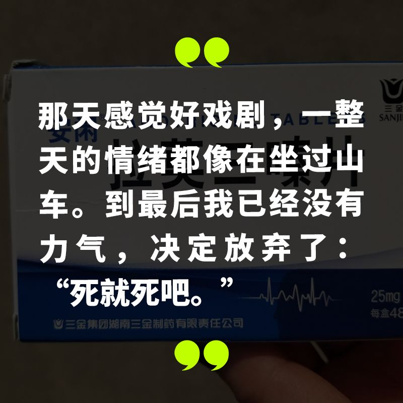
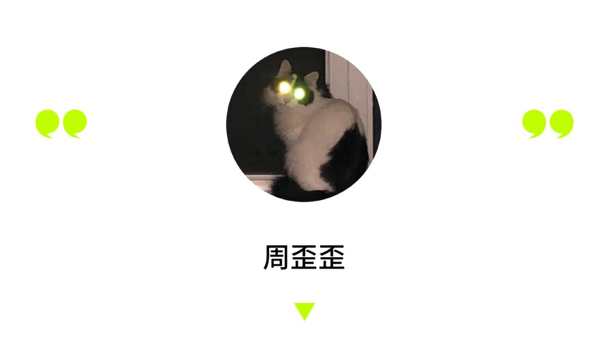
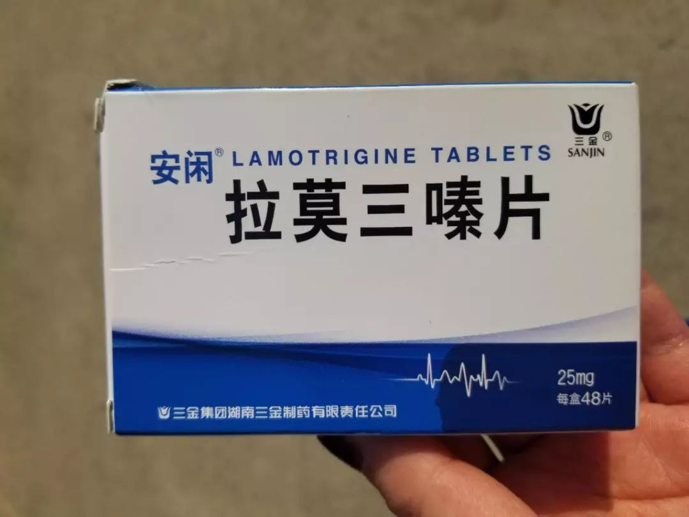
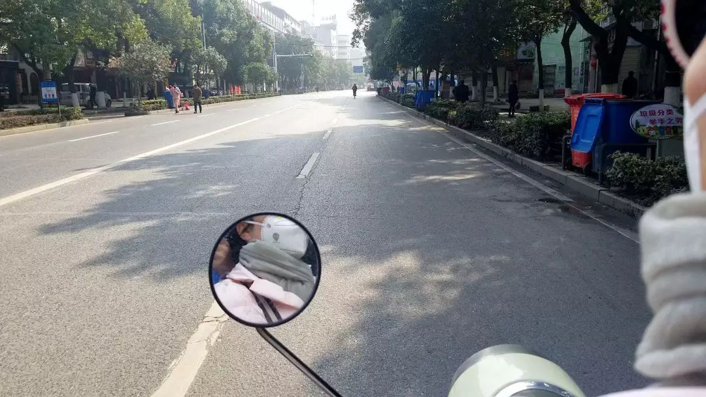
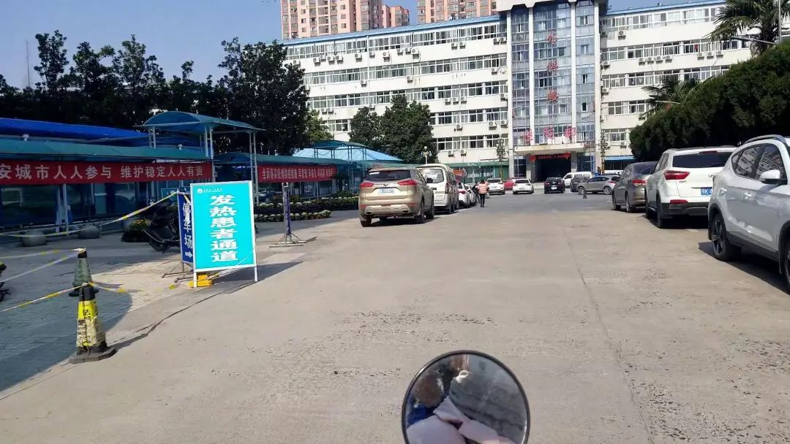

穿越疫情封锁线：4天,23个药店,90通电话,我终于在湖北买到抑郁药
原文链接 备份链接 大家好，我是田静。 被困半个月，你们还好吗？ 对于很多朋友来说，可能只是生活上的不便，无法出门，购物不方便而已。 但对于很多病人来说，这半个月度日如年。 前段时间有个艾滋病患者，因为封路，无法出门购买艾滋药物，而在微博 …
 

1 月 31 日下午，陈一（化名）在朋友圈发布了求药信息 —— 安闲拉莫三嗪片。自从去年确诊为反射性癫痫综合症病人以来，陈一必须每天服用这种药。这时，她手里的药仅够继续服用三天，而封城结束似乎仍遥遥无期。如果断药，前期的药物治疗将功亏一篑，随时有全面性发作的危险，特殊情况下还可能猝死。
我们采访了陈一，她从发现药不够，到线上求药、多方打听，经历了漫长的焦虑和恐惧。幸运的是，最终她拿到了药物。而像她这样的慢性病人还有很多。封城情况下，有陈一这样幸运的人，从亲戚朋友的帮助下拿到所需的药物；有人花一天的时间，走访医院和相关部门，开出通行证，驱车去外地拿药；还有人迫于疫情的严峻形势，决定暂时放弃求药，即使不清楚断药将会带来何种风险。以下是笔者根据受访者口述整理的故事。
21 号中午，原本是我们公司准备开年会的日期。我带着五位同事准备了舞蹈节目，已经排练了十天。21 号早上，我们在化妆室等化妆，我突然接到领导电话：“公司已有两人确诊，2 人疑似感染，年会取消，你们赶紧回家。” 我当时第一个想法是为年会排练的节目功亏一篑了，有点不甘心，觉得对不起辛苦付出的同事，但最后觉得 “还是命重要”，就买了当天的票回去。
我家在湖北省孝感市云梦县，从汉口火车站到云梦站只需要 38 分钟。到武汉站的时候是晚上六点半，人很多，车站已经启用了红外热像监控，只有极个别的人没戴口罩。回家的车上，大家看起来都很紧张。第二天一觉醒来，我从朋友圈和微博看到新闻，感受到疫情的严重性，决定 23 号和爸妈一起去买生活必备物资，之后开始禁足。29 号，云梦封城了。
在家基本上每天刷微博，把微博看到的物资对接信息发到朋友圈里，这么过到大年初六。初六早上，我吃药的时候发现，剩下的药只够三天的量。上网一查，大家说距离封城结束至少还有两周时间。我有点慌了。这件事打破了无聊的 “闭关”，我们一家跟着开始着急。
我是 18 年五月份确诊癫痫的。18 年大年初八，上班第一天，在工位上坐了六七个小时，下班前我突然抽搐，然后就昏过去了。同事帮我打了 120。我当时意识基本没有了，但模糊感觉被抬上了救护车。
本以为是太累了没休息好，加上脑 CT 也显示正常，醒了后我就直接出院了。直到 4 月份又被 120 拉走……那次就做了全套检查，最终被确诊为反射性癫痫综合症。医生告知，癫痫患者若接受药物治疗，就与慢性病人一样不能中断，若不听医嘱临时中断，轻则会经历频繁的 “小” 发作，重则前期的治疗作废，引起更频繁更严重的全身性大发作，特殊情况有猝死风险。
医生开的药（全部图片来自受访者）
之后我每天早晚固定吃药。其中安闲拉莫三嗪片是一种新药，属于管控药范围。刚开始服药时，经常会忘记吃晚上那次。有一回熬夜到很晚，忘记吃药了，坐在床上病发作了，缓了十几分钟才好。从那之后就不会忘了，实在不敢掉以轻心。
有癫痫这件事，即使是亲近的同事我都很少讲，除非关系真的非常好，或者我在同事面前发作过 —— 我会害怕别人对我的怜悯或唏嘘。毕竟癫痫在常人眼里有个不好听的名字，羊癫疯。我很害怕在人多的地方突然发作，因为出现过这种尴尬的情况。有一次地铁门快关了，为了冲进地铁我紧张地快跑，慌张之后 “小” 发作了。我找了个旁边空的地方蹲下：“小” 发作时会呕，会失神，也可能摔跤。我不喜欢别人朝我看过来的目光，他们会以为我喝多了吧。
还有一次跟一个不太熟的异性朋友去看灾难片，因为场面太 “壮观”，不知不觉我又 “小” 发作了，有点严重。我的呕声有点像哭也有点像笑，在电影院里引起了小小的骚动，真的丢脸。缓过来后，这位异性朋友把我送回了家，我没告诉他实情。后来我拒绝了与他见面，面子这关，我过不去。
这个药我持续服用三五年后，如果控制得好、不发作，就可停用，算是康复了；治不好，就要吃一辈子。可眼下我怎么办？若我中断吃药，可能随时 “大” 发作。一来会让家人担心；二来 “大” 发作时我又是咬舌满嘴是血，又是呼吸不畅，加上全身僵直后，肌肉酸痛软弱无力，十分痛苦；三来若真是昏迷不醒，就得送医院 —— 让家人暴露在感染区下，我不忍心。
我本来的计划是初七返回武汉时再去拿药，但没想到现在出不去了。我们只能开始想办法。

1 月 30 号当晚，我给家里的微信群和几个好友发消息，请大家帮忙打听医院和药店。31 号一大早，我没睡好，很早就醒了。叔叔打电话过来：“我开药店的同学说县城里的所有药店已经被管治，不让单独开门。” 接着，朋友们陆续也反馈了消息：“药店无药/县里三家医院都没有药。”
收到这些消息的时候，虽然已有准备，但我心里还是凉了半截。当时还有一丝希望，就是我刚开始服药时，有一次周末回家忘记带药，曾经和妈妈碰运气地跑到县医院门诊大楼后面的一家药店，买到了拉莫三嗪片。朋友也没人提到县医院药店的具体情况，于是我跟我妈决定冒险去县医院问一问。
这是回家十天以来我第一次出门。中午的云梦像凌晨三点的云梦，除了几个卖菜的摊位，街上几乎没有人，门店也是紧闭的，一切都好不真实。自从出生以来，我从没见过这样的云梦。
主干道上没有汽车
妈妈骑着她的小摩托，带我来到县医院。县医院大门只开了够一辆车进出的宽度，旁边设了提示牌，旁边设了提示牌：“凡进入院区者，必须佩戴口罩”。我先去了上次买到药的县医院药房，却看见药房旁边的告示牌：“发热患者通道” —— 这个活动板房的医院药店被改成了发热门诊。
不复存在的药房
我当时特别害怕，第一次真切地感觉到离死亡这么近。
没有办法，只能到县医院的内科门诊挂号。医护人员拿着红外体温仪在我额头上扫了一下，放行之后，我一路小跑进去。虽然病人寥寥无几，但我一秒钟都不想多呆。医生查了系统后，明确地说：“没有药。整个系统都查不到。” 我强调了一遍这药的重要性，医生仍然表示没有办法。
当时我急得眼泪都快出来了，也只能和妈妈先回家，寄希望于其他途径。
回到家后，我与家人发现无法网购此药：网购需填写处方，但病历留在了武汉；而且湖北省内不能发货。放弃了网购药品后，我们一家在焦虑中理了理思路：两条线，线上发朋友圈和微博求助，线下继续打听能买到药的其他医院，并联系外地的朋友问他们能否开药寄出。
求助微博发出后，云梦同盟会帮忙转发。有热心网友给我建议：可以打电话给食药监局。我决定再等等看亲戚朋友的反馈。下午 4 点左右，我的好朋友告诉我孝感的医院可能会有药，因为之前卖过。听到这个消息的时候，我打字的手都在抖，“总算有点着落了”。但当我们开始询问如何开车去孝感拿药时，发现即使开车到孝感也就二十多分钟，但封城了不让开车。
妈妈是社区舞蹈老师，她在舞蹈学员群里发出求助后，一位恰好是卫生局工作人员的学员告诉我们，要携身份证、病历（或相关证明）、医院出示的无药证明、驾驶证/车辆行驶证等资料，去防疫指挥大队开通行证。凭借通行证，交通管理部门便会放行。
31 日，以为一切差不多水道渠成了，我打算第二天带着身份证，去县医院开证明，然后去孝感拿药。这时孝感优抚医院的工作人员发来微信，“你们不用过来了，刚刚我问了现在在医院值班的同事，我们现在没有这个药了。” 同一天我收到来自安陆、应城、大悟和孝感市的消息，有药店的老板、有医药销售、有医院医生，全部表示：“没有这个药。”
那天感觉好戏剧，一整天的情绪都像在坐过山车。到最后我已经没有力气，决定放弃了：“死就死吧。”

2 月 1 日一觉醒来，我再次感觉一座大山压着自己，喘不过气、精神紧张，随时有可能再一次发作。
躺在床上，我开始回复关心我情况的消息，这时看到婶婶的信息：“问到了，中医院有“。之后表姐在也群里发了 2 盒药的图片，她那边也找到了。表姐常年不在云梦，她辛苦了一天才打听到原来中医院是有药的。
我除了感谢几乎顾不上跟婶婶和表姐多说什么，马上去了中医院，不敢再等。拿到药时，我心里的石头终于落地 —— 自己又能正常活下去了。
随后几天，很多有类似情况的朋友开始微信问我：没药怎么办/怎么开通行证。
 向我打听管控药怎么开的老乡
向我打听管控药怎么开的老乡
我在武汉的室友是麻城人，她在孕期，但是贫血，需要持续打针依诺肝素钠注射液，如果不打，对自己和胎儿都会有极大风险。她的老公在当地指挥中心开到了通行证，驱车到武汉出租屋内才拿到药。
还有一位朋友的妈妈，曾患肾病，使用大量激素类药物治疗，虽然治愈但留下了后遗症，需要长期服用治疗贫血和骨质疏松的药物。医生告诫说，如果长期不吃药，会全身疼痛，腿部尤为严重。武汉严重的疫情让她决定暂时不出门去医院拿药，因为即便去了医院，也有可能面临无药和交叉感染的风险。虽然不知道长期断药会不会出现医生所说的情况，但眼下，她决定先扛一扛。
最后，虽说自己早就因为这个病在鬼门关走过好几次，但这次的恐惧却最为真实。原本可以避免的情况，却因为种种原因，险些成为压倒骆驼的最后一根稻草。我这样的慢性病人还有很多，希望这次疫情能快点过去，也希望大家都能平安。
// 编辑：Alexwood
在这次疫情中，你是否被迫改变了自己的生活习惯，你和周围的人产生了怎样新的关系，你获得了哪些观察和思考？如果你有想法想要分享，请发送电子邮件到 tougao@yishiyise.com，注明 “武汉呼叫”，我们的编辑看到后可能会与你联系。
2019 年年末的时候我们希望每个人都能在 2020 年更脚踏实地一点，而 2020 如此凶猛，当我们都困在这场灾难之中，每一个你身边的故事带来的感受或许都将指向我们的未来。虽然叫 “武汉呼叫”，但疫情影响的是我们所有人。无论你来自哪里，身在哪里，我们都想听到你的故事。
原文链接 备份链接 大家好，我是田静。 被困半个月，你们还好吗？ 对于很多朋友来说，可能只是生活上的不便，无法出门，购物不方便而已。 但对于很多病人来说，这半个月度日如年。 前段时间有个艾滋病患者，因为封路，无法出门购买艾滋药物，而在微博 …
原文链接 备份链接 2020年2月8日。 农历正月十五，元宵节。 武汉封城第十七天。 天门封城第十六天。 两天没见五四兄动态了，昨晚看到一张李文亮医生的照片，十分神似瘦版的他，就想发给他看看，顺便问他最近有没有更文。哪知消息一发过去被弹 …
原文链接 备份链接 前言 2003年的非典，我在武汉读书，每天两点一线地简单生活，虽然也看看新闻报道，但那时的网络并不发达，信息量很少，武汉感染的人也很少，所以真的没有什么感觉。 2020年的肺炎疫情，爆发在我生活了将近20年的武汉——这 …
原文链接 备份链接 摘要：新型冠状病毒肺炎袭城之后，外卖员老计（化名）觉得武汉的马路变宽了，武汉人的面目也温柔下来。大年初一，他给武昌医院的医生送了一餐鲍鱼饭。才华街友谊大道路口的药店口罩卖完了，消毒液还有少量存货，他秒发微博，广而告之。 …
原文链接 备份链接 这里是大学生的新媒体实验室 ∆ 轮到你了：这是武汉长江日报摄影记者陈卓参与武汉疫情报道的第16天，调岗一年后他被临时抽调参与一线报道。武汉封城前一天，他安顿好家中老小，封城当天和妻子一起返回武汉，开始过这个充满未知与风 …